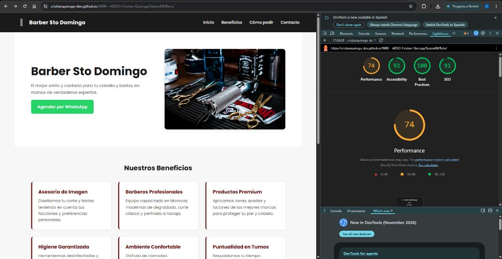
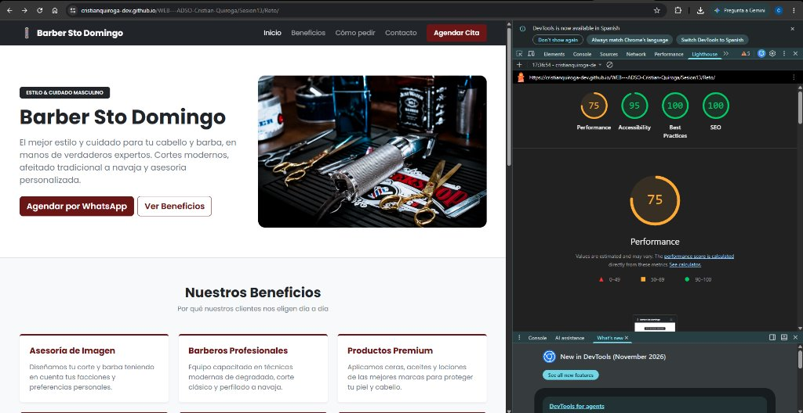

Sesión 08 vs Sesión 13
Comparativa de las dos versiones de la landing Barber Sto Domingo
1. Capturas de Lighthouse (modo incógnito)
Sesión 08 · CSS Puro

Sesión 13 · Bootstrap 5

2. Tabla Comparativa
| Criterio | Sesión 08 (CSS Puro) | Sesión 13 (Bootstrap 5) |
|---|---|---|
| Rendimiento | 74 / 100 | 75 / 100 ✅ |
| Accesibilidad | 92 / 100 | 95 / 100 ✅ |
| Líneas de CSS escritas | 300 líneas | 58 líneas ✅ |
| Tiempo que tomó | 3 a 4 horas | ~45 minutos ✅ |
| Facilidad para hacerla responsive | Media (requiere @media queries) | Muy fácil (col-12 col-md-6 col-lg-4) ✅ |
| Qué tan única se ve | 100% original ✅ | Estándar Bootstrap |
3. Conclusión
Para el proyecto final de ADSO usaremos Bootstrap 5 con variables de marca propias.
Los resultados de Lighthouse lo confirman: Bootstrap igualó o superó al CSS puro en todas las categorías (rendimiento 75 vs 74, accesibilidad 95 vs 92, SEO 100 vs 91). Además redujo las líneas de CSS de 300 a solo 58, lo que significa menos tiempo de desarrollo y más tiempo para trabajar en la funcionalidad del proyecto.
Lo único que sigue siendo mejor en CSS puro es el diseño único, ya que con Bootstrap la página se ve más "estándar". Pero eso se puede corregir usando las variables CSS de Bootstrap (--bs-btn-bg, --bs-btn-hover-bg) para aplicar los colores de la marca sin escribir CSS extra.
En resumen: Bootstrap 5 es más rápido, más accesible, más fácil de hacer responsive y requiere mucho menos código. Es la mejor opción para el proyecto final.